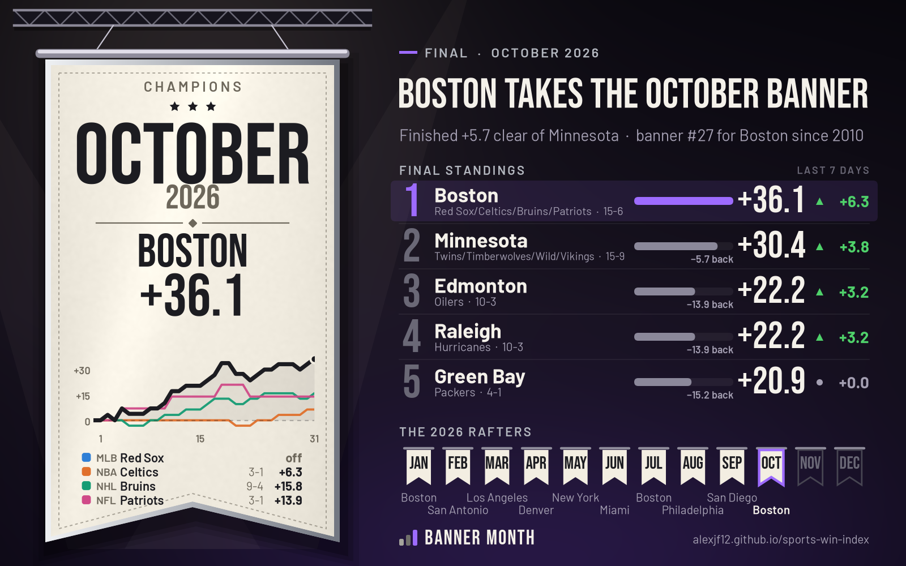

Boston wins the October 2026 banner
+36.1 weighted, finishing +5.7 clear of Minnesota — banner #27 for Boston since 2010
- Champion
- Boston: Red Sox/Celtics/Bruins/Patriots — 15-6, +36.1 weighted
- Runner-up
- Minnesota: Twins/Timberwolves/Wild/Vikings — 15-9, +30.4 weighted
- Banners since 2010
- This is #27 for Boston
| Place | City | Teams | Record | Weighted |
|---|---|---|---|---|
| 1 | Boston | Red Sox/Celtics/Bruins/Patriots | 15-6 | +36.1 |
| 2 | Minnesota | Twins/Timberwolves/Wild/Vikings | 15-9 | +30.4 |
| 3 | Edmonton | Oilers | 10-3 | +22.2 |
| 4 | Raleigh | Hurricanes | 10-3 | +22.2 |
| 5 | Green Bay | Packers | 4-1 | +20.9 |
